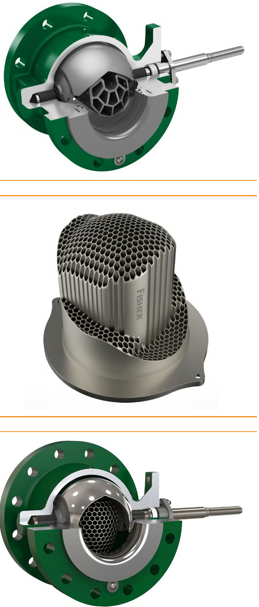
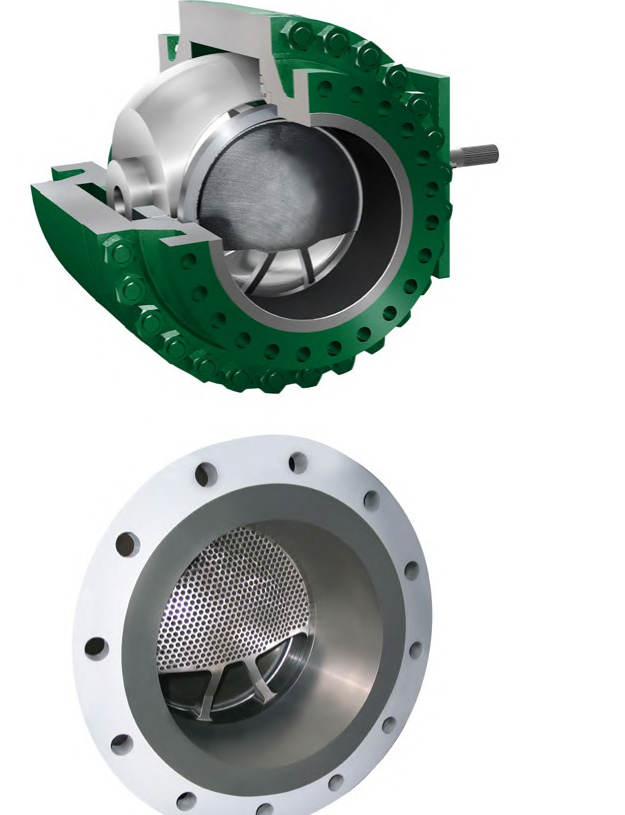

Ball Trim — Process Duty vs. Fire-Safe Isolation
Segmented Ball + Noise/Cavitation Trim — Process Duty

Continuous seal contact shears rather than clogs on erosive, viscous, or slurry service carrying entrained solids or fibers; Emerson’s added trim options extend it with moderate noise attenuation and cavitation protection
Full-Port Trunnion Ball — Fire-Safe Isolation

Little or no flow restriction; fire-tested and certified to API 6 and 6FA — spec’d for bypass, batch, monitor, and emergency shutoff duty on a clean-service line, not erosive or slurry throttling
After Control Valve Handbook, 6th ed., Figs. 3.10 & 3.15 — used directly (Fig. 3.10's three-panel composite kept as one figure, Style Guide Sec 5.14). Component Index: cvh-cmp-ball-valve-cavitation-noise-options, cvh-cmp-full-port-ball-valve-trunnion.